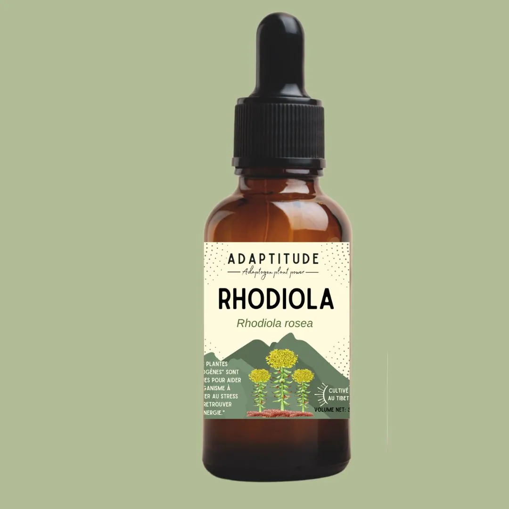
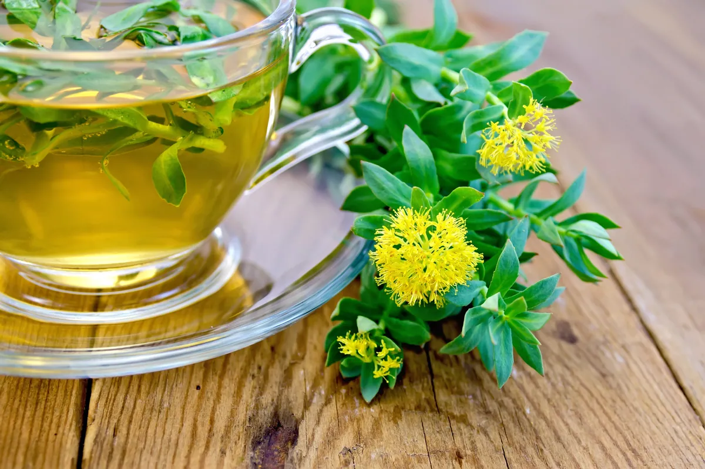

Élixirs naturels · 5 min de lecture
Élixir au Rhodiola Rosea : le rituel adaptogène pour renforcer l’énergie mentale, la résistance au stress et la performance naturelle


Introduction
Dans un quotidien rythmé par les exigences professionnelles, les responsabilités personnelles et la surcharge mentale permanente, de nombreuses personnes avancent en mode automatique. Fatigue intellectuelle, manque de motivation, baisse de concentration, stress latent… Le corps et l’esprit tiennent, mais à quel prix ?
La nature, pourtant, met à notre disposition des plantes capables d’aider l’organisme à s’adapter intelligemment aux défis modernes, sans le brusquer ni l’épuiser.
Aujourd’hui, je te présente un élixir naturel à base de rhodiola rosea, une plante adaptogène puissante, reconnue pour soutenir l’énergie mentale, la clarté cognitive et la résistance au stress.
Associée à des ingrédients soigneusement sélectionnés, elle devient un véritable allié de l’équilibre nerveux et de la performance durable.
👉 Je tiens à vous rappeler une règle d’or que j’aime beaucoup et qui guide mes choix au quotidien : si la nature ne l’a pas créé, ne le buvez pas.
Le problème
Le stress chronique et la fatigue mentale sont devenus presque banals. Pourtant, leurs effets sur l’organisme sont profonds :
baisse de concentration et de mémoire,
sensation de fatigue dès le réveil,
perte de motivation,
irritabilité et tension nerveuse,
difficulté à maintenir une énergie stable dans la journée.
Face à cela, beaucoup se tournent vers le café, les stimulants ou les solutions artificielles, qui offrent un soulagement temporaire… au prix d’un épuisement progressif.
Le vrai besoin n’est pas d’être stimulé davantage, mais d’être soutenu et régulé.
La promesse
L’élixir au rhodiola rosea agit comme un rééquilibrant naturel du système nerveux.
Il aide le corps à mieux gérer le stress, améliore la résistance mentale et favorise une énergie claire, stable et durable, sans nervosité ni crash.
Ce n’est pas un excitant.
C’est un adaptateur intelligent.
Les bénéfices
Une meilleure clarté mentale et concentration
Une résistance accrue au stress émotionnel et intellectuel
Une énergie durable sans agitation
Une amélioration de la motivation et de l’endurance mentale
Un soutien global de l’équilibre nerveux
🌿 Pourquoi ce remède est efficace
La rhodiola rosea est une plante adaptogène utilisée depuis des siècles dans les régions froides et montagneuses.
Sa particularité est unique : elle aide l’organisme à s’adapter aux situations de stress, qu’elles soient physiques, mentales ou émotionnelles.
Elle agit notamment sur :
le système nerveux central,
les neurotransmetteurs liés à la motivation et à la vigilance,
la régulation de la fatigue mentale.
Associée à des ingrédients comme le citron, le miel et le gingembre, son absorption est améliorée et son action devient plus harmonieuse, plus progressive et mieux tolérée.
👉 Le résultat : une énergie mentale claire, stable et fonctionnelle, sans surstimulation.
💪 Les bienfaits de l’élixir au Rhodiola Rosea
Amélioration des performances cognitives
La rhodiola soutient la concentration, la mémoire et la clarté mentale.Réduction du stress et de la fatigue mentale
Elle aide à mieux gérer la pression et à éviter l’épuisement nerveux.Énergie stable et durable
Contrairement aux stimulants, elle n’entraîne pas de nervosité ni de chute énergétique.Soutien de la motivation et de l’endurance mentale
Idéale pour les périodes de travail intense ou de surcharge intellectuelle.Adaptation globale de l’organisme
Le corps devient plus résilient face aux défis quotidiens.
🍋 La recette de l’Élixir Clarté & Résilience au Rhodiola Rosea
Ingrédients (alchimie optimale)
½ cuillère à café de poudre de rhodiola rosea (ou extrait en poudre, bio)
200 ml d’eau chaude (non bouillante)
1 cuillère à soupe de miel brut (optionnel)
Le jus d’½ citron frais
Une pincée de gingembre en poudre ou frais râpé
Pourquoi cette synergie fonctionne ?
La rhodiola soutient le système nerveux et l’énergie mentale.
Le citron améliore l’assimilation et apporte une clarté tonique.
Le miel nourrit le cerveau et adoucit l’effet adaptogène.
Le gingembre stimule la circulation et la biodisponibilité.
Préparation
Verse l’eau chaude dans une tasse (évite l’eau bouillante).
Ajoute la rhodiola et mélange soigneusement.
Incorpore le citron, le miel et le gingembre.
Bois tiède, lentement.
⏰ Comment l’utiliser
À consommer 1 fois par jour, idéalement :
le matin,
ou en début de journée de travail intense.
Évite une prise en fin de journée pour ne pas perturber le sommeil.
Peut être utilisée en cure de 3 à 6 semaines, avec des pauses.
La régularité est plus importante que la quantité.
👥 À qui s’adresse ce rituel
Aux personnes mentalement fatiguées
À ceux qui subissent un stress professionnel ou émotionnel important
Aux étudiants, entrepreneurs, créatifs et sportifs
À ceux qui veulent améliorer leur concentration sans excitants
À toute personne cherchant une énergie mentale naturelle et stable
⚠️ Précautions
Respecte les dosages : la rhodiola est puissante.
Déconseillée en cas de troubles bipolaires sans avis médical.
Évite l’association avec des stimulants forts.
Choisis une rhodiola pure, bien dosée et de qualité.
En cas de traitement médical, demande conseil à un professionnel de santé.
🌱 Conclusion & appel à l’action
L’élixir au rhodiola rosea est un outil de résilience moderne, enraciné dans la sagesse de la nature.
Il ne force pas le corps. Il l’aide à s’adapter, à se renforcer et à retrouver une clarté durable.
Dans un monde qui pousse toujours à aller plus vite, il nous rappelle une vérité essentielle :
👉 l’équilibre est la clé de la performance durable.
👉 Si la nature ne l’a pas créé, ne le buvez pas.
Je partage régulièrement des élixirs, rituels et ressources bien-être pour t’aider à renforcer ton énergie mentale et ton équilibre global, naturellement.
📚 Je suis auteur bien-être sous le pseudo Chest0 JM.S., mes ouvrages sont disponibles sur Amazon.
🔗 Retrouve tout mon univers ici :
👉 https://linktr.ee/Chest00
👉 Si tu veux aller plus loin, découvre aussi notre
Plus de 40 recettes d'élixirs dans les livres Chest0.
Voir les livres